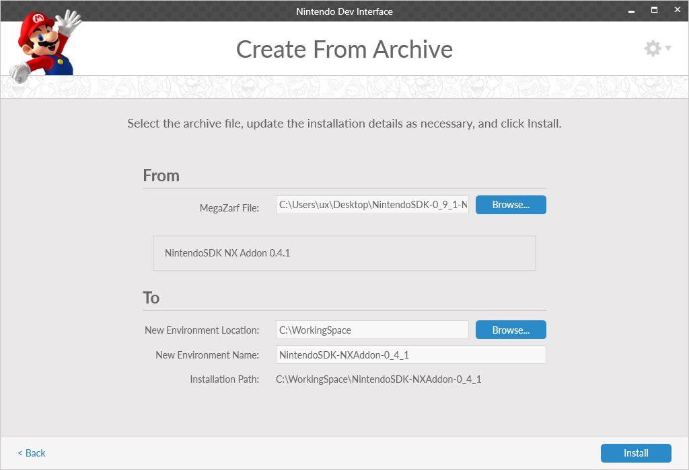

You can prepare the NintendoSDK using two different methods. Using online installation, you get and install the package directly from the network. Using offline installation, you get data in advance and use it to install.
However, the online installation option is not ready yet, so this page only describes the procedure for offline installation.
In an offline installation, you import an environment created in advance from a combination of specific packages.
Before performing this method, you must get the file with the exported environment, called megazarf, from the support group.
Installing the NintendoSDK Package
To use the NDI, you must have Windows local administrator privileges.
| Procedure | Operation |
|---|---|
| 1 |
Start the NDI and from Building/Managing a Development Environment, select Create From Archive.
|
| 2 |
In Installation Source, specify the Set the Installation Target and Environment Name as appropriate, and then click Install to start the installation. Info
The environment refers to the directory where you install the NintendoSDK. To install multiple versions or installation package types of the NintendoSDK, you can create multiple environments. Info
False Positives from Antivirus Software When installing various NintendoSDK packages, NintendoSDK-related files can be detected incorrectly as viruses by antivirus software.  |
| 3 |
No operations are required on the installation screen.
|
| 4 |
Select whether to install the USB driver while installing the NintendoSDK. (The USB driver will be used in features that will be added in future releases. Make sure you have it installed then.)
|
| 5 |
Click Finish in the screen shown when NintendoSDK installation is completed.
When the installation completes, the
Click OK, and then from the list of options in the installed environment, start the NintendoSDK Portal.
|

CONFIDENTIAL